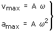
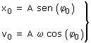
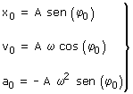

| Determinar los parámetros del movimiento Datos: vmax amax Utilizando las expresiones de los valores máximos de velocidad y aceleración se plantea un sistema:  Con estos datos no se puede determinar φ0 Datos: x0 v0 A ω En las ecuaciones del movimiento se hace t = 0, x = x0, v = v0 y queda un sistema:  En cualquiera de las ecuaciones se puede despejar φ0 Datos: x0 v0 a0 En las ecuaciones del movimiento se hace t = 0, x = x0, v = v0, a = a0 y queda un sistema:  Se obtendrán dos valores de φ0 . El valor correcto será el que cumpla en todas las ecuaciones (Si se halló φ0 a partir de una ecuación con seno bastará con comprobar en la ecuación con coseno y viceversa) |